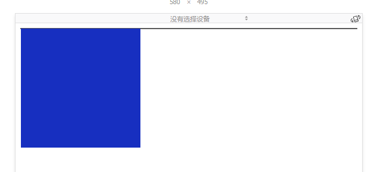
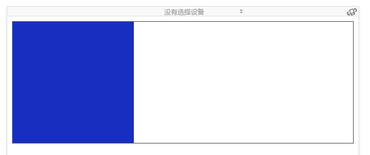

CSS浮动为什么会塌陷
浮动
浮动的框可以向左或向右移动，直到它的外边缘碰到包含框或另一个浮动框的边框为止。
浮动脱离文档流，所以文档的普通流中的块框表现得就像浮动框不存在一样。
浮动塌陷
当元素设置浮动而父元素的宽高没有设置时，高度会塌缩为0。如图

解决方案
1 在父元素里面填加一个没宽度高度的元素使用clear:both
1
2
3
4
5
6
7
8
9
10
11
12
13
14
15
16
17
18
19
20
21
22
23
24
25
26
27
28
| <!DOCTYPE html>
<html>
<head>
<title></title>
<style type="text/css">
#div1{
border :1px solid #595959;
}
#div2{
width: 200px;
height: 200px;
background-color: #172FC0;
float: left;
}
.clear:after{/*清除浮动*/
content: '';
display:block;
clear: both;
}
</style>
</head>
<body>
<div id="div1" class="clear">
<div id="div2" >
</div>
</div>
</body>
</html>
|

按照我的理解在外部div的后面加上了一个没有高度和宽度的元素，并且使用了clear清除了左右的浮动使得两边没有浮动对象让整个内容被撑开。
2 使用overflow:hidden
1
2
3
4
5
6
7
8
9
10
11
12
13
14
15
16
17
18
19
20
21
22
23
24
25
26
27
28
29
30
| <!DOCTYPE html>
<html>
<head>
<title></title>
<style type="text/css">
#div1{
border :1px solid #595959;
overflow: hidden;/*清除浮动*/
}
#div2{
width: 200px;
height: 800px;
background-color: #172FC0;
float: left;
}
.clear:after{
content: '';
display:block;
clear: both;
}
</style>
</head>
<body>
<div id="div1" >
<div id="div2" >
</div>
</div>
</body>
</html>
|
overflow:hidden触发了外层的BFC布局，使得内层的高度被计算。
3 给父元素添加高度